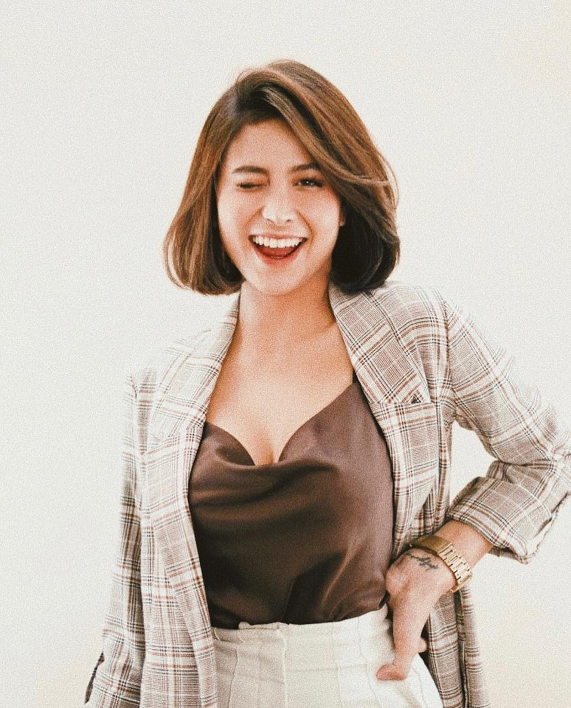

Tugas Praktik Layout

Awkarin
Nama : Karin Novilda Sulaiman
Tanggal Lahir : 29 November 1997 (umur 23)
Nama Lain : Awkarin
Pekerjaan : Selebgram, Youtuber, Model, Aktivis, Feminis, Narablog, Pengusaha, Presenter, Penyanyi
Orang Tua : Kolonel Laut dr. Mohamad Sulaiman Abidin, Sp.M (ayah),
Siti Zuchraida (ibu)
Keluarga : Zahra Annisya Putri Sulaiman (adik)
Kehidupan Awal
From Wikipedia
Ia adalah anak pertama dari dua bersaudara.
Ayahnya, Mohamad Sulaiman Abidin, berprofesi sebagai dokter spesialis mata,
sekaligus menjadi seorang kolonel di Tentara Nasional Indonesia Angkatan Laut.
Ibunya yang bernama Siti Zuchraida merupakan seorang dokter gigi.
Ia memiliki satu orang adik perempuan bernama Zahra Annisya Sulaiman.
Karier
Kewirausahaan
Ia menjadi perintis sekaligus CEO dari A Team Management, yang merupakan manajemen dari kumpulan selebriti internet yang berkarier di media sosial Instagram. Selain itu, ia juga memiliki serentetan bisnis lainnya.
Seperti Bad Influence by Awkarin yang merupakan sebuah bisnis pakaian yang menjual sweter dan kaus oblong, bisnis fesyen dengan hijab yang diberi nama Hally by Awkarin, usaha makanan bertajuk Awkenyang yang dijual secara daring, serta organisasi nonprofit bertajuk Awdoption yang bertujuan untuk menolong hewan-hewan yang dibuang dan tak terurus untuk mencarikan pemilik baru yang ingin mengadopsi.
Aktivisme
Kariernya sebagai aktivis dimulai ketika ia bertandang ke Palu, Sulawesi Tengah untuk menjadi relawan yang membantu para korban bencana pada saat Gempa bumi dan tsunami Sulawesi 2018. Selanjutnya, ia bersama organisasi Sekolah Relawan dan Kitabisa.com berkecimpung dalam penggalangan dana untuk membagikan masker terhadap korban kebakaran hutan dan lahan di beberapa daerah di Pulau Kalimantan pada tahun 2019.
Ia juga terjun langsung membagikan sebanyak 3.000 nasi kotak untuk dibagikan kepada para mahasiswa yang ikut serta dalam unjuk rasa dan kerusuhan Indonesia September 2019 di depan gedung DPR.
Pada hari Kamis, 25 September 2019, ia menyiapkan alat kebersihan untuk membersihkan lokasi yang menjadi titik bentrok antara demonstran dan polisi.
Kehidupan Pribadi
Pendidikan
SMP Negeri 1 Tanjungpinang
SMA Negeri 58 Jakarta
Universitas Bina Nusantara — jurusan Manajemen (mengundurkan diri)
John Robert Powers Indonesia
LaSalle College Jakarta
Prestasi
Saat pengumuman kelulusan dari jenjang SMP, ia meraih nilai Ujian Nasional dengan rata-rata 9,5 di setiap mata pelajaran dan total nilainya secara keseluruhan adalah 37,9.
Bahkan, ia sampai diwawancarai oleh salah satu wartawan dari acara televisi Detak TPI yang ditayangkan di TPI.
Asal usul nama "Awkarin"
Pada awalnya, ia ingin memberi nama akunnya dengan Awkward Karin. Menurut pengakuannya, ia sempat tidak bisa berkomunikasi di depan orang banyak ataupun di depan kamera. Karena itu, ia digolongkan sebagai orang yang awkward menurut Bahasa Inggris, yang dalam Bahasa Indonesia diartikan sebagai “canggung”. Oleh karena itu, ia memutuskan untuk memakai nama pengguna @awkwardkarin di salah satu akun media sosialnya.
Namun, menurutnya, nama tersebut terlalu panjang.
Ia pun menyingkat kata awkward menjadi awk saja. Karena “Karin” merupakan nama depannya, maka huruf K pada kata awk dihilangkan, sehingga terbentuklah nama “Awkarin”.
Hubungan Asmara
Ia pernah berpacaran dengan seorang pria bernama Deva Viandhika, yang berakhir karena Deva diduga berselingkuh dengan salah satu sahabat Awkarin. Beberapa bulan kemudian, ia menjalin asmara dengan selebriti internet bernama Gaung Sabda Alam Muhammad, yang lebih dikenal sebagai Gaga Muhammad. Namun, mereka hanya berpacaran selama sekitar lima bulan. Setelah itu, ia sempat berpacaran dengan Oka Mahendra Putra yang sempat menggunakan nama panggung John Hammond. Sebelum Oka meninggal dunia, mereka sudah sempat menyatakan untuk memutuskan hubungan asmara.
Kemudian, ia berpacaran dengan Muhammad Alfi Asyari, yang merupakan anak dari wakil ketua MPR Mahyudin. Hubungan pacaran mereka hanya bertahan selama dua bulan.
Setelah itu, ia menjalani hubungan berpacaran yang berbeda agama untuk pertama kali dalam hidupnya, dengan salah satu selebriti internet dari A Team Managememt, yakni Gangga Kusuma. Setelah beberapa bulan berpacaran, mereka pun putus.
Pada tahun 2020, ia berpacaran dengan Muhammad Sabian Tama, yang merupakan anak dari pendiri NET. Mediatama, sekaligus Menteri Pariwisata dan Ekonomi Kreatif pada Kabinet Indonesia Maju di era presiden Joko Widodo untuk periode 23 Oktober 2019-23 Desember 2020, yakni Wishnutama. Namun, hubungan mereka kandas pada saat Awkarin merayakan ulang tahunnya yang ke-23 dan juga saat hari jadi peresmian hubungan berpacaran mereka.
Single
Cewek Manis
Bad (2016, bersama Young Lex)
Candu (2016)
Badass (2017)
Makan Bang (2017, bersama Young Lex, Masgib dan alm. Oka Mahendra)